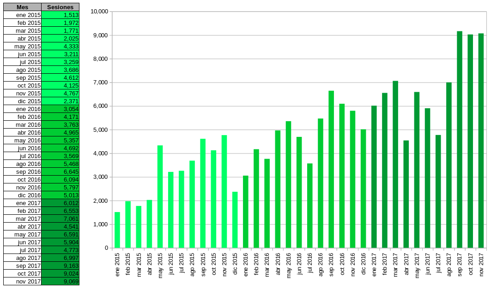

Como una obligación plasmada en la ley del Instituto (Art. 43. I), el IMPLAN Torreón tuvo el reto de crear un sistema de información con indicadores para la recopilación, procesamiento, resguardo, intercambio y difusión de la información con todos los sectores del municipio.
El equipo técnico del IMPLAN estableció una meta más alta al ofrecer, además de indicadores, análisis, mapas e investigaciones en su sitio web. En otras palabras, realiza la tarea de recopilar todo el conocimiento que sirva para mejorar la calidad de vida de los habitantes de nuestra región, de forma organizada y al alcance de todos los ciudadanos. Para visualizar la magnitud de este trabajo, en este análisis describiremos la Plataforma del Conocimiento.
El reflejo de la organización de la Plataforma comienza en la página inicial donde de primera mano están los enlaces a los instrumentos de planeación: Sistema Metropolitano de Indicadores (SMI), Sistema de Información Geográfica (SIG), Plan Estratégico Torreón con Visión Metropolitana TRC2040 e Indicadores Básicos por Colonias (IBC).
Posteriormente se listan las últimas publicaciones, últimos tweets y la clasificación por categorías de todas las publicaciones. Gracias a las categorías es sencillo elegir una temática para tener los enlaces a análisis, indicadores, mapas, etc. de más de 1,600 publicaciones.
Sistema Metropolitano de Indicadores
Con el Sistema Metropolitano de Indicadores (SMI) se tiene una base de datos con información de los municipios de Torreón, Gómez Palacio, Lerdo y Matamoros, comparable en el tiempo, con otros municipios y estados. La razón de mantener los indicadores de los cuatro municipios, es porque desde el punto de vista nacional e internacional nos ven como la Zona Metropolitana de La Laguna.
Al momento de hacer este análisis se tienen 259 indicadores con 8,607 datos. Agrupados en 35 categorías donde un indicador puede estar presente en una o más de éstas.
Sistema de Información Geográfica
El Sistema de Información Geográfica (SIG) es una herramienta de vanguardia que brinda datos georreferenciados útiles para la toma de decisiones y el seguimiento por parte de los ciudadanos de la infraestructura, equipamiento, reglamentos, obra pública y más.
Entre más de 30 mapas, destaca el de Zonificación Secundaria, que deriva del Reglamento de Desarrollo Urbano Zonificación Uso de Suelo y Construcción del Municipio de Torreón.
El tema de movilidad y en particular el transporte público es de gran interés ciudadano. Razón por la cual, el mapa de Cobertura de Transporte es uno de los más visitados. Al momento de escribir este análisis, el transporte urbano del Municipio de Torreón está por iniciar un proceso de reestructuración por el arranque del Metrobús (BRT).
Indicadores Básicos de Colonias
Luego de ofrecer indicadores a nivel municipal, a partir de 2017 se publican los Indicadores Básicos por Colonias (IBC). Para 399 colonias se tienen hasta 30 indicadores de tipo demográfico, económico, de vivienda y sobre las unidades económicas.
Además, IBC tiene la capacidad de graficar los indicadores, mostrar un mapa con los límites de la colonia y conservar una reseña con la historia, el presente y fotografías de cada una.
Análisis e investigaciones
Los análisis e investigaciones complementan los recursos de la plataforma, ofreciendo documentación, opiniones y evaluaciones en aras de enriquecer constructivamente el estudio y toma de decisiones basadas en información.
El esfuerzo del equipo humano del IMPLAN Torreón se ve en la constancia de publicar un análisis por semana. Ésta labor es, buscando una similitud, la mejor forma de alimentar a la plataforma para mantenerla “viva” como fuente creciente de conocimientos que se alinean a los ejes del IMPLAN.
Condiciones de uso y características técnicas
En pocas palabras, se permite la copia y el uso siempre y cuando no se alteren los datos e información, o se usen para fines maliciosos. Además, se solicita que se incluya como referencia al IMPLAN Torreón y un URL directo de donde se obtuvo la información.
La Plataforma del Conocimiento es Software Libre protegido por la licencia GPLv3. Todo el contenido es abierto y cualquier persona puede descargarlo en el repositorio público alojado en GitHub / TrcIMPLAN.
Google Analytics: Estadísticas de uso desde enero 2015 a noviembre 2017
- Se contabilizan 171,921 sesiones realizadas por 118,755 usuarios.
- El número de páginas entregadas es de 483,473.
- La duración promedio del tiempo que permanece el usuario por página es de 3 minutos con 3 segundos.
- Prácticamente 1 de cada 4 visitantes hace su visita desde un teléfono inteligente o tablet.
- Y 3 de cada 4 ingresos proviene de los resultados de los buscadores; ya que la Plataforma facilita el trabajo a buscadores y usuarios, prefiriendo éstos últimos realizar una búsqueda en Google para encontrar lo que necesitan rápidamente.
Google Analytics: Cantidad de sesiones mensuales desde enero 2015 a noviembre 2017
